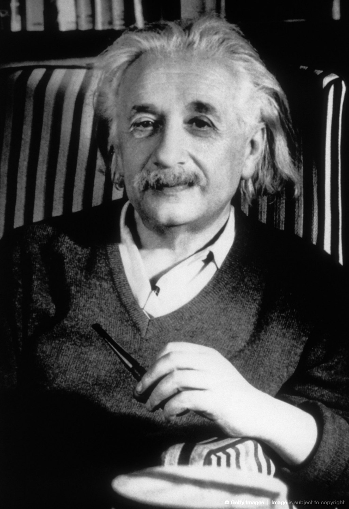

A Truly Beatiful Mind
Who do you think of, when you hear the word ‘genius’? Who
is a genius — what qualities do you think a genius has?
We shall now r ead about a young Ger man civil servant who
took the world by storm about a hundr ed years ago. In the
summer of 1905, the 26-year-old published in quick succession
four ground-breaking papers: about light, the motion of
particles, the electrodynamics of moving bodies, and energy.
His work took up only a few pages in scientific jour nals, but
changed forever our understanding of space, time and the
entire cosmos — and transformed the name ‘Einstein’ into a
synonym for genius.
Fifty years after his death, Albert Einstein’s genius still reign

1. ALBERT Einstein was born on 14 March 1879 in the
German city of Ulm, without any indication that he
was destined for greatness. On the contrary, his
mother thought Albert was a freak. To her, his head
seemed much too large.
2. At the age of two-and-a-half, Einstein still wasn’t
talking. When he finally did learn to speak, he uttered
everything twice. Einstein did not know what to do
with other children, and his playmates called him
“Brother Boring.” So the youngster played by himself
much of the time. He especially loved mechanical
toys. Looking at his newborn sister, Maja, he is said
to have said: “Fine, but where are her wheels?”
3. A headmaster once told his father that what
Einstein chose as a pr ofession wouldn’t matter ,
because “he’ll never make a success at anything.”
Einstein began learning to play the violin at the
age of six, because his mother wanted him to; he
later became a gifted amateur violinist, maintaining
this skill throughout his life.
4. But Albert Einstein was not a bad pupil. He
went to high school in Munich, where Einstein’s
family had moved when he was 15 months old, and
scored good marks in almost every subject. Einstein
hated the school’s regimentation, and often clashed
with his teachers. At the age of 15, Einstein felt so
stifled there that he left the school for good.
5. The pr evious year, Albert’s parents had moved to
Milan, and left their son with relatives. After prolonged
discussion, Einstein got his wish to continue his
education in German-speaking Switzerland, in a city
which was more liberal than Munich.
6. Einstein was highly gifted in mathematics and
interested in physics, and after finishing school,
he decided to study at a university in Zurich. But
science wasn’t the only thing that appealed to the
dashing young man with the walrus moustache.
7.He also felt a special interest in a fellow student,
Mileva Maric, whom he found to be a “clever
creature.” This young Serb had come to Switzerland
because the University in Zurich was one of the few
in Europe where women could get degrees. Einstein
saw in her an ally against the “philistines”—
those people in his family and at the university
with whom he was constantly at odds. The couple
fell in love. Letters survive in which they put their
affection into words, mixing science with
tenderness. Wrote Einstein: “How happy and pr oud
I shall be when we both have brought our work on
relativity to a victorious conclusion.”
8. In 1900, at the age of 21, Albert Einstein was a
university graduate and unemployed. He worked
as a teaching assistant, gave private lessons and
finally secured a job in 1902 as a technical expert
in the patent office in Bern. While he was supposed
to be assessing other people’s inventions, Einstein
was actually developing his own ideas in secret. He
is said to have jokingly called his desk drawer at
work the “bureau of theoretical physics.”
9. One of the famous papers of 1905 was Einstein’s
Special Theory of Relativity, according to which time
and distance are not absolute. Indeed, two perfectly
accurate clocks will not continue to show the same
time if they come together again after a journey if
one of them has been moving very fast relative to
the other . Fr om this followed the world’s most
famous formula which describes the relationship
between mas and energy
E = mc 2
(In this mathematical equation, E stands for energy, m for mass
and c for the speed of the light in a vacuum (about 300,000 km/s).
* * *
10. While Einstein was solving the most difficult
problems in physics, his private life was
unravelling. Albert had wanted to marry Mileva right
after finishing his studies, but his mother was
against it. She thought Mileva, who was three years
older than her son, was too old for him. She was
also bothered by Mileva’s intelligence. “She is a
book like you,” his mother said. Einstein put the
wedding off.
11. The pair finally married in January 1903, and
had two sons. But a few years later, the marriage
faltered. Mileva, meanwhile, was losing her
intellectual ambition and becoming an unhappy
housewife. After years of constant fighting, the
couple finally divorced in 1919. Einstein married
his cousin Elsa the same year
* * *
12. Einstein’s new personal chapter coincided with
his rise to world fame. In 1915, he had published
his General Theory of Relativity, which provided a
new interpretation of gravity. An eclipse of the sun
in 1919 brought proof that it was accurate. Einstein
had correctly calculated in advance the extent to
which the light from fixed stars would be deflected
through the sun’s gravitational field. The newspapers
proclaimed his work as “a scientific revolution.”
13. Einstein received the Nobel Prize for Physics in
1921. He was showered with honours and invitations
from all over the world, and lauded by the press.
* * *
14. When the Nazis came to power in Germany in
1933, Einstein emigrated to the United States. Five
years later, the discovery of nuclear fission in Berlin
had American physicists in an upr oar. Many of
them had fled from Fascism, just as Einstein had,
and now they were afraid the Nazis could build and
use an atomic bomb
15. At the urging of a colleague, Einstein wrote a
letter to the American President, Franklin D.
Roosevelt, on 2 August 1939, in which he warned:
“A single bomb of this type . . . exploded in a port,
might very well destroy the whole port together with
some of the surrounding territory.” His words did
not fail to have an effect. The Americans developed
the atomic bomb in a secret project of their own,
and dropped it on the Japanese cities of Hiroshima
and Nagasaki in August 1945.
16. Einstein was deeply shaken by the extent of the
destruction. This time he wrote a public missive to
the United Nations. In it he proposed the formation
of a world government. Unlike the letter to Roosevelt,
this one made no impact. But over the next decade,
Einstein got ever more involved in politics —
agitating for an end to the arms buildup and using
his popularity to campaign for peace and democracy.
17. When Einstein died in 1955 at the age of 76, he
was celebrated as a visionary and world citizen as
much as a scientific genius.
* * *